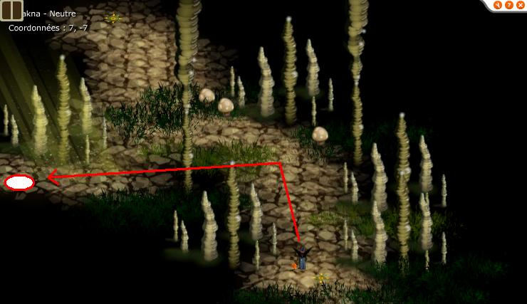

Menu barbok'you

Donjon sphincter Cell
Donjon faisable par équipe de 6 à 8 joueurs de level 110 à 140
Durée : environ 60-90 minutes
Prendre pierre de capture level 500
Les clées en objets de quetes s'obtiennent en faisant les Donjon Rat Blanc et Donjon Rat Noir |
|---|
Donjon pour les levels 120-130 et assez tactique, ne pas s'aventurer sans une bonne team ;) |
|---|
L'entrée est un peu cachée. |
|---|
|  |
|---|
Elle est loin l'époque des Tortues Ninja... |
On parle à la personne avec sa jolie panoplie et c'est parti ! |
|---|
Les monstres ont pas mal de point de vie dans ce donjon |
|---|
Ils tapent à 50-100 environ, du fait de leurs level ont xp déjà un peu dans les salles |
|---|
un panda et/ou un sacrieur sont conseillés pour ce donjon afin de placer les monstres au bon endroit dans la derniére salle |
|---|
Donjon sympa car demande un petit peu de tactique |
|---|
Il manque quand meme un Rat Caille à mon gout... |
|---|
Des monstres qui tapent un peu plus fort ! |
|---|
 |
|---|
Prochaine salle le boss ! |
 |
|---|
Un rat blanc, un rat noir et le sphincter ! Tuez en priorité le rat noir afin de pouvoir soigner normalement (il lance peste noir qui fait des dommages si on soigne la personne qui a ce sort), débarrasser vous ensuite des merdouilles qui trainent autour Attaquez vous ensuite au rat blanc, le plus simple est de le desenvouter pour le tuer (il lance peste blanche qui augmente de 50% ses resistances dans l'element dans lequel vous le taper, donc 2 coups et 100% resist...) La technique pour tuer le sphincter et ses 200% resist est de placer les tortues qu'il invoque à coté de lui, elles lancent un sort au cac qui fait -200% resist dans l'element de sa couleur (tortue rouge : -200% feu par exemple), taper ensuite le sphincter une fois qu'il a ce malus, attention cependant, sans CC et sans malus le Cell vous tape deja à 300-500 par tour, avec -200% quelques part il peut vous tuer trés vite (les tortues lancent aussi sur vous ce sort) ! Il faut tacler les tortues pour qu'elles restent à coté du sphincter XP trés sympa, capturable, il permet de drop ressource pour pano Rat Noir, Rat Blanc et Panoplie Céremoniale, une personne de l'equipe droppera aussi le familier Atouin |
Dofus est un MMORPG édité par Ankama." Barbok " est un site non-officiel sans aucun lien avec Ankama.
Toutes les illustrations sont la propriété d'Ankama Studio et de Dofus. Le contenu de ce site a été rédigé initialement par Immortal, il ne s'agit que d'une remise en ligne effectuée par Eternal Games.